2. Interpolowanie i aproksymowanie funkcji
oraz wykonywanie optymalizacji
�wiczenia wst�pne:
Rozwi�za� zadania 1, 2, 3, 4 dotycz�ce interpolacji funkcji.
Wykona� �wiczenie moB02cw1.cs z u�yciem pliku narz�dziowego moB02_fappr1d.cs. �wiczenie ilustruje zastosowanie aproksymacji SPH z j�drem gaussowskim do przybli�enia dowolnej funkcji.
Rozwi�za� zadanie 5 dotycz�ce aproksymacji funkcji.
Wykona� �wiczenie moB02cw2.cs z u�yciem pliku narz�dziowego moB02_fappr1d.cs. �wiczenie ilustruje zastosowanie aproksymacji SPH z j�drem gaussowskim do przybli�enia pochodnej funkcji.
Rozwi�za� zadanie 6 dotycz�ce aproksymacji pochodnej.
Wykona� �wiczenie moB02cw3.cs z u�yciem pliku narz�dziowego moB02_fappr1d.cs. �wiczenie ilustruje zastosowanie aproksymacji SPH z j�drem gaussowskim do przybli�enia drugiej pochodnej funkcji.
Rozwi�za� zadanie 7 dotycz�ce aproksymacji drugiej pochodnej.
Rozwi�za� zadanie 8 dotycz�ce aproksymacji dwuwymiarowej.
Rozwi�za� zadanie 9 dotycz�ce symulacji SPH przewodnictwa ciep�a.
Rozwi�za� zadanie 10 dotycz�ce metody najmniejszych kwadrat�w.
Rozwi�za� zadania 11 i 12 dotycz�ce optymalizacji metod� Cauchiego.
Rozwi�za� zadanie 13 dotycz�ce optymalizacji metod� Newtona.
Rozwi�za� zadanie 14 dotycz�ce optymalizacji metod� Monte Carlo.
Zadania i problemy:
Zad. 1. Napisa� program, kt�ry dla ustalonego stopnia n > 0 oraz dowolnego przedzia�u [a, b], gdzie b > a, wygeneruje n+1 dowolnych w�z��w interpolacji oraz losowe warto�ci do nich przyporz�dkowane:
Nast�pnie dla tak przygotowanych danych oraz dla dowolnego argumentu x program obliczy warto�� wielomianu Newtona S(x) zgodnie ze wzorem:
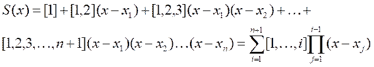
gdzie r��nice dzielone oblicza si� rekurencyjnie:
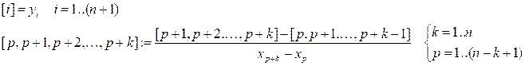
Sprawdzi�, czy dla tak otrzymanego wielomianu spe�nione s� podstawowe r�wno�ci interpolacyjne:
W tym celu mo�na wykorzysta� testowe asercja.
Odpowied�: �moB02zad1.cs
Zad. 2. Napisa� program, kt�ry dla ustalonego stopnia n > 0 oraz dowolnego przedzia�u [a, b], gdzie b > a, wygeneruje n+1 dowolnych w�z��w interpolacji oraz losowe warto�ci do nich przyporz�dkowane:
Nast�pnie dla tak przygotowanych danych oraz dla dowolnego argumentu x program obliczy warto�� wielomianu Lagrange�a S(x) zgodnie ze wzorem:
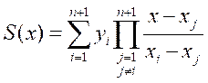
Sprawdzi�, czy dla tak otrzymanego wielomianu spe�nione s� podstawowe r�wno�ci interpolacyjne:
W tym celu mo�na wykorzysta� testowe asercja.
Odpowied�: �moB02zad1.cs
Zad. 3. Napisa� program, kt�ry wprowadza ze strumienia wej�ciowego� (klawiatura konsoli) przedzia� [a, b], gdzie b > a, oraz rz�d N > 0 jego dyskretyzacji. Krok dyskretyzacji wynosi:
Nast�pnie program na kolejnych odcinkach tej dyskretyzacji wykonuje liniow� interpolacj� kawa�kami (stopnia n = 1) dla pierwotnej funkcji:
W tym celu w programie nale�y wygenerowa� dane:
Nast�pnie dla ka�dego splajna na kolejnym odcinku [x1, x2] nale�y zastosowa� wz�r interpolacyjny:
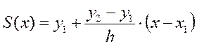
Po z��czeniu splajn�w utworzy si� funkcja g(x), kt�ra stanowi przybli�enie pierwotnej funkcji f(x). Wyniki odpowiednio g�stej ewaluacji funkcji g(x) w przedziale [a, b] nale�y zapisa� do strumienia wyj�ciowego (plik na dysku), tak aby mo�na by�o sporz�dzi� poprawny wykres tej funkcji w Excel.
Nast�pnie w programie nale�y zbada� b��d interpolacji. W tym celu wykona� tak� sam� ewaluacj� funkcji f(x), po czym obliczy� maksymalny b��d bezwzgl�dny, jakim obarczona jest przybli�ona funkcja g w odniesieniu do funkcji dok�adnej f:
i podobnie obliczy� b��d �redniokwadratowy:
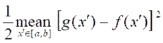
a nast�pnie por�wna� obydwie miary b��du interpolacji.
Odpowied�: �moB02zad3.cs
Zad. 4. Napisa� program, w kt�rym dla tych samych danych i funkcji, co w zadaniu poprzednim, zastosowano interpolacj� kwadratow� (stopnia n = 2) zadan� wzorem interpolacyjnym:
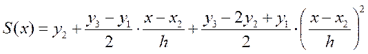
W tym celu nale�y wprowadzi� do programu dwukrotnie wi�kszy rz�d N dla dyskretyzacji przedzia�u [a, b] ni� w zadaniu poprzednim.
Odpowied�: �moB02zad4.cs
Zad. 5. Napisa� program, kt�ry wprowadza z klawiatury przedzia� [a, b], gdzie b > a, rozmiar N > 0 oraz no�nik , a nast�pnie �wykonuje metod� SPH aproksymacj� gaussowsk� dla pierwotnej funkcji:
Wyniki ewaluacji funkcji i jej aproksymacji zapisa� do pliku i sporz�dzi� wykres� w Excel.
Nast�pnie w programie nale�y zbada� b��d aproksymacji. W tym celu nale�y obliczy� maksymalny b��d bezwzgl�dny, jakim obarczona jest aproksymuj�ca funkcja g w odniesieniu do funkcji pierwotnej f:
i podobnie obliczy� b��d �redniokwadratowy:
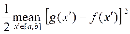
a nast�pnie por�wna� obydwie miary b��du aproksymacji. Zbada� wp�yw rozmiaru N oraz no�nika �na b��d. Powt�rzy� badania b��du dla przedzia�u z obci�tymi brzegami przedzia�u.
Odpowied�: �moB02zad5.cs
Zad. 6. Napisa� program, kt�ry podobnie jak w poprzednim zadaniu wykonuje metod� SPH aproksymacj� gaussowsk� dla pierwotnej funkcji:
oraz dodatkowo jej pierwszej pochodnej:
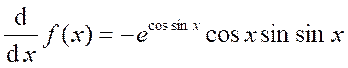
Wyniki ewaluacji pochodnych i jej aproksymacji zapisa� do pliku i sporz�dzi� wykres� w Excel.
Nast�pnie w programie nale�y zbada� b��d aproksymacji. W tym celu nale�y obliczy� maksymalny b��d bezwzgl�dny, jakim obarczona jest pochodna z aproksymuj�cej funkcji g w odniesieniu do pochodnej z pierwotnej funkcji f:
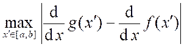
i podobnie obliczy� b��d �redniokwadratowy:
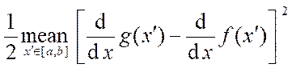
a nast�pnie por�wna� obydwie miary b��du aproksymacji. Zbada� wp�yw rozmiaru N oraz no�nika �na b��d. Powt�rzy� badania b��du dla przedzia�u z obci�tymi brzegami przedzia�u.
Odpowied�: �moB02zad6.cs
Zad. 7. Napisa� program, kt�ry podobnie jak w poprzednim zadaniu wykonuje metod� SPH aproksymacj� gaussowsk� dla pierwotnej funkcji:
�
oraz dodatkowo jej drugiej pochodnej:
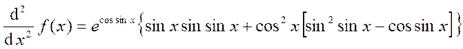
Wyniki ewaluacji pochodnych i jej aproksymacji zapisa� do pliku i sporz�dzi� wykres� w Excel.
Nast�pnie w programie nale�y zbada� b��d aproksymacji. W tym celu nale�y obliczy� maksymalny b��d bezwzgl�dny, jakim obarczona jest druga pochodna z aproksymuj�cej funkcji g w odniesieniu do drugiej pochodnej z pierwotnej funkcji f:
i podobnie obliczy� b��d �redniokwadratowy:
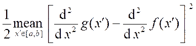
a nast�pnie por�wna� obydwie miary b��du aproksymacji. Zbada� wp�yw rozmiaru N oraz no�nika na b��d. Powt�rzy� badania b��du dla przedzia�u z obci�tymi brzegami przedzia�u.
Odpowied�: �moB02zad7.cs
Zad. 8. Napisa� program, kt�ry wprowadza z klawiatury przedzia�y [a, b] i [c, d], gdzie b > a i c > d, rozmiary N > 1 i M > 1 oraz no�nik , a nast�pnie� wykonuje metod� SPH dwuwymiarow� aproksymacj� gaussowsk� dla pierwotnej funkcji:
�
W tym celu nale�y dziedzin� funkcji podzieli� na kom�rki o bokach:
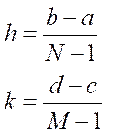
oraz polu powierzchni:
przy czym kom�rki posiadaj� naro�a w N x M w�z�ach siatki o wsp��rz�dnych:
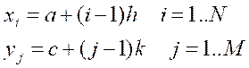
Nast�pnie utworzy� klas� aproksymatora 2D, kt�ry przybli�a podan� funkcj� zgodnie ze wzorem:
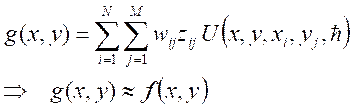
gdzie warto�ci funkcji s� liczone w w�z�ach siatki:
Ponadto przyj��, �e j�dro aproksymacji zadane jest funkcj� Gaussa 2D:
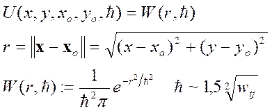
Wyniki ewaluacji funkcji i jej aproksymacji zapisa� do pliku i sporz�dzi� wykres� w Excel.
Nast�pnie w programie nale�y zbada� b��d aproksymacji. W tym celu nale�y obliczy� maksymalny b��d bezwzgl�dny, jakim obarczona jest aproksymuj�ca funkcja g w odniesieniu do funkcji pierwotnej f:
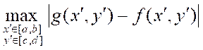
i podobnie obliczy� b��d �redniokwadratowy:
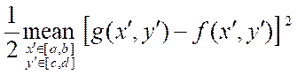
a nast�pnie por�wna� obydwie miary b��du aproksymacji. Zbada� wp�yw rozmiar�w N i M oraz d�ugo�ci wyg�adzania �na b��d. Powt�rzy� badania b��du dla przedzia�u z obci�tymi brzegami przedzia�u.
Odpowied�: �moB02zad8.cs
Zad. 9. Napisa� program, kt�ry wykonuje symulacj� numeryczn� metod� SPH w jednowymiarowym problemie przewodnictwa cieplnego opartym na� r�wnaniu Fouriera:
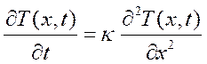
gdzie za�o�ono brak unoszenia przez o�rodek materialnym V(x, t) = 0, st�d pochodna Stokesa sprowadza si� do zwyk�ej pochodnej po czasie. Ponadto przyj�to, �e badany o�rodek jest nie tylko stacjonarny, ale r�wnie� jednorodny, st�d wsp��czynnik dyfuzyjno�ci cieplnej jest sta�y k = const(x, t). W programie nale�y otrzyma� nieznane pole temperatury T(x, t) dla danego obszaru i okresu symulacji, warunk�w brzegowych i pocz�tkowych oraz dla danej dyfuzyjno�ci.
Zak�adamy, �e po�o�enie w polu temperatury nale�y do ustalonego przedzia�u:
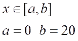
zadanego w dowolnych fizycznych jednostkach d�ugo�ci. Przedzia� ten jest jednowymiarowym obszarem symulacji, st�d poddajemy go dyskretyzacji poprzez ustalony podzia� na jednakowe odcinki przestrzenne:
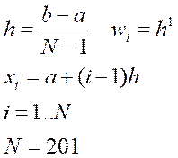
D�ugo�� h sta�a dla ka�dego odcinka dyskretyzacji przestrzeni jest w jednym wymiarze r�wna wprost obj�to�ci wi dla i-tej cz�stki SPH, czyli stanowi jej �rednic�.� Nast�pnie przyjmujemy, �e czas w polu temperatury r�wnie� nale�y do ustalonego przedzia�u wyznaczonego w dowolnych jednostkach czasu:
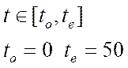
Poniewa� przedzia� ten jest okresem symulacji, wi�c podobnie dzielimy go na kroki czasowe o jednakowej d�ugo�ci:
Zak�adamy, �e symulowany o�rodek jest pr�tem o jednakowej pocz�tkowej temperaturze pokojowej, przy czym ko�ce pr�ta znajduj� si� w temperaturze wrzenia wody i topnienia lodu:
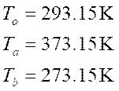
O�rodek posiada ustalon� dyfuzyjno�� zadan� wzgl�dem stosunku kwadratu odcinka przestrzeni lub te� �rednicy cz�stki SPH do kroku czasu:
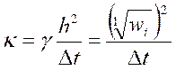
gdzie bezwymiarowy mno�nik jest r�wny:
ale w og�lno�ci mo�e si� zmienia� w zakresie od 0.1 do 1.1.
Zgodnie z og�ln� metod� symulacji SPH w pierwszym podej�ciu przyjmujemy nast�puj�c� aproksymacj� r�wnania Fouriera:
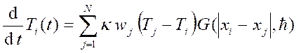
Wyst�puj�cy w tym wyra�eniu laplasjan j�dra aproksymacji wyznaczony jest z radialnej jednowymiarowej funkcji Monaghana i st�d przyjmuje posta�:
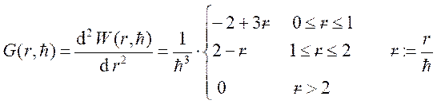
W drugim podej�ciu natomiast laplasjan j�dra poddajmy dyskretyzacji poprzez rozwini�cia w szereg Taylora, st�d aproksymacja r�wnania jest nast�puj�ca:
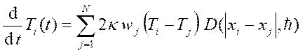
gdzie gradient j�dra aproksymacji tak�e wyznaczony jest z jednowymiarowej radialnego funkcj� Monaghana i st�d wynosi:
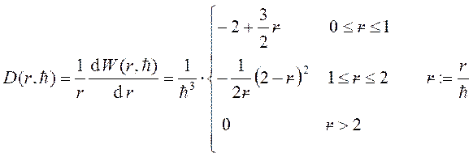
We wszystkich wyra�eniach dla j�dra d�ugo�� wyg�adzania (no�nik j�dra) przyjmuje warto�� wzgl�dem odcinka przestrzeni lub te� �rednicy cz�stki SPH:
gdzie bezwymiarowy mno�nik jest r�wny:
ale w og�lno�ci mo�e si� zmienia� w zakresie od 0.5 do 1.5.
W numerycznej symulacji rozwi�zujemy r�wnanie od stanu pocz�tkowego:
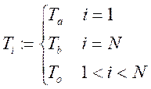
wykonuj�c schemat iteracyjny Eulera:
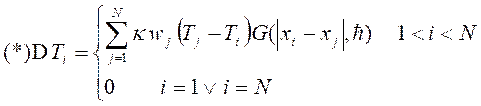
przy czym warunki brzegowe w iteracji pozostawiamy niezmienione.
Wyniki symulacji temperatury zapisa� do pliku i sporz�dzi� wykresy w Excel. W tym celu nale�y utworzy� 11 serii czasowych dla r�wnoodleg�ych czas�w t w okrojonym przedziale od to + 100*Dt do te � 0*Dt. Ka�da seria zawiera warto�ci pola temperatury T(x, t) w 101 r�wnoodleg�ych punktach x w okrojonym przedziale od a + 3*w do b � 1*w.� Zapami�tane w pliku warto�ci temperatury mo�na podda� dodatkowo wyg�adzaniu gaussowskiemu:
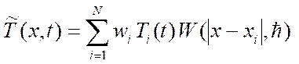
z j�drem zadanym funkcj� Gaussa w jednym wymiarze:
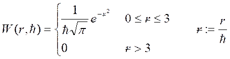
gdzie dodatkowo zastosowano obci�cie przestrzenne funkcji j�dra. Por�wna� wyniki otrzymane w pierwszym i drugim podej�ciu do aproksymacji r�wnania Fouriera. Wykona� analiz� b��d�w w tych obliczeniach.
Zastosowa� inne funkcje j�dra w obliczeniach laplasjanu i warto�ci pola, patrz wyk�ad teoretyczny.
W zadaniu mo�na przetestowa� inne warto�ci sta�ych parametr�w symulacji i zbada� ich wp�yw na stabilno�� oblicze�.
Uwaga: Wszystkie podane w tre�ci zdania parametry oblicze� zosta�y tak ustalone, aby symulacja SPH nie ulega�a destabilizacji numerycznej wskutek nadmiernej kumulacji i propagacji b��d�w przybli�onej metody i arytmetyki sko�czonej precyzji, co mo�e zachodzi� w kolejnych iteracyjnych i czasowych krokach oblicze�. Je�eli bowiem propagacja ta jest ze wzmocnieniem, to bardzo szybko w obliczeniach pojawiaj� si� wyniki o warto�ci nieokre�lonej NaN. Z drugiej strony, propagacja ze t�umieniem powoduje, �e wyniki ulegaj� przedwczesnej zbie�no�ci numerycznej i st�d nie d��� do w�a�ciwego rozwi�zania r�wnania. Nale�y zatem dobra� takie parametry, aby w obliczeniach wyst�pi�a propagacja jednostajna, wtedy b��dy danych nie ulegaj� zmianie i w efekcie wzgl�dny b��d wyj�ciowy wynik�w jest por�wnywalny ze wzgl�dnym b��dem wej�ciowym.
Odpowied�: �moB02zad9.cs
Wyniki: 1 - moB02zad9.xls, �2 - moB02zad9.xls
Pierwsze podej�cie.
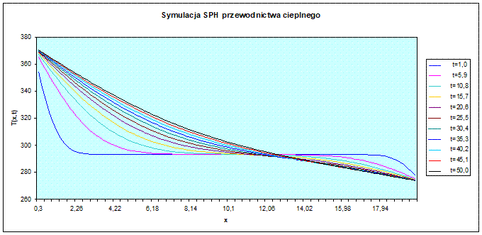
Drugie podej�cie.
Wniosek:
Obydwa podej�cia do aproksymacji r�wnania daj� prawie identyczne wyniki.
Zad. 10. Napisa� program, kt�ry dla ustalonego niedu�ego rozmiaru N > 1 oraz dowolnego przedzia�u [xmin, xmax], gdzie xmax > xmin, z krokiem jego dyskretyzacji:
wygeneruje N punkt�w pomiarowych:
dla dowolnego zaburzenia e << 1 oraz ustalonych parametr�w a i b.
Nast�pnie program obliczy metod� regresji liniowej parametry dopasowania linii prostej do wygenerowanych danych zgodnie ze wzorami:
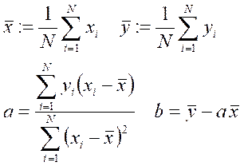
Sprawdzi�, czy tak otrzymane parametry dopasowania s� bliskie warto�ciom przyj�tym w procedurze generowania danych:
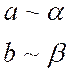
W tym celu wyznaczy� b��dy wzgl�dne:
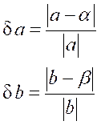
Odpowied�: �moB02zad10.cs
Zad. 11. Napisa� program, w kt�rym zdefiniowano procedur� do generowania rozwojowego zbioru podanej du�ej liczby par danych:
�
Ka�da para (x, y) zawiera przy tym losowe wektory wej�ciowe x:
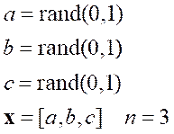
oraz wektory docelowe y obliczone z dw�ch wyra�e�:
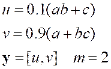
gdzie n i m to rozmiary wej�cia i wyj�cia.
W programie na potrzeby optymalizacji definiujemy r�wnie� przedmiotowe odwzorowanie realizuj�ce prosty perceptron sk�adaj�cy si� z dw�ch neuron�w liniowych z funkcjami aktywacji w postaci tangensa hiperbolicznego:
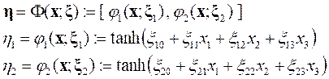
przy czym podpunkty z wolnymi parametrami obydwu neuron�w:
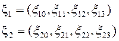
w�r�d kt�rych s� pr�g i wagi ka�dego neuronu, razem tworz� jeden punkt:
gdzie r = 8 to rz�d optymalizacji. Nast�pnie definiujemy w programie funkcj� kosztu przetwarzan� bezpo�rednio w algorytmie optymalizacji:
gdzie strata jest b��dem �redniokwadratowym w problemie regresji:
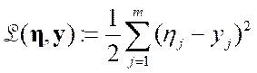
Wyst�puj�ce w algorytmie optymalizacji pochodne cz�stkowe funkcji kosztu nale�y policzy� numerycznie z ilorazu r��nicowego tr�jpunktowego:
gdzie skok h > 0 nale�y tak dobra�, aby unikn�� zbyt du�ego b��du obci�cia w arytmetyce sko�czonej precyzji dla ilorazu i r��nicy dw�ch bliskich liczb.
W kodzie g��wnym programu nale�y zaimplementowa� algorytm najszybszego spadku Cauchiego z bezw�adno�ci� na podstawie pseudokodu:
� # podany wsp��czynnik
tempa optymalizacji
� # podany wsp��czynnik
bezw�adno�ci optymalizacji
� # podany zasi�g p�tli
optymalizacji
� # podany minimalny
koszt optymalizacji
� # podane lub losowe
pocz�tkowe parametry optymalizacji
� # zerowe pocz�tkowe
przyrosty parametr�w
� # p�tla optymalizacji
z krokami schematu iteracji
� # bie��ca warto��
funkcji kosztu
� # warunek osi�gni�cia
minimum kosztu
� # nowe przyrosty
parametr�w
� # nowe warto�ci
parametr�w
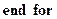
Wszystkie hiperparametry programu, takie jak liczba par danych we zbiorze rozwojowym, rozmiar i zasi�g optymalizacji, wsp��czynniki tempa i bezw�adno�ci optymalizacji oraz minimalny poziom kosztu do osi�gni�cia w optymalizacji, mo�na wprowadzi� ze standardowego strumienia wej�ciowego programu lub te� przyj�� w programie jako ustalone.
Po zako�czeniu optymalizacji i wyznaczeniu optymalnego punktu parametr�w wolnych perceptronu nale�y zweryfikowa� wyniki tych oblicze�. W tym celu por�wnujemy ze wektorem docelowym y wektor wyj�ciowy h otrzymany z perceptronu w wyniku jego przewidywa� dla wektora wej�ciowego:
�
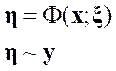
kt�ry wraz ze wektorem docelowym tworzy par� wybran� ze zbioru danych:
lub te� nowo utworzon� zgodnie z procedur� generowania danych dla zbioru rozwojowego, podan� na pocz�tku zadania. Aby por�wnanie to wyrazi� ilo�ciowo, nale�y wyznaczy� odpowiednie b��dy wzgl�dne:
W celu zwi�kszenia stopnia trafno�ci w predykcji perceptronu, tak aby wyniki tej predykcji nie odbiega�y wyra�nie od warto�ci docelowych, mo�na do odwzorowania perceptronu doda� nast�pn� warstw� dw�ch neuron�w, przy czym wyj�cie z poprzedniej warstwy staje si� wtedy wej�ciem dla nast�pnej.
Odpowied�: �moB02zad11.cs
Zad. 12. Napisa� program, kt�ry podobnie jak w poprzednim zadaniu wykonuje optymalizacj� perceptronu, ale zamiast w ka�dym kroku tego procesu liczy� ca�kowit� funkcj� kosztu program ten losuje jedn� par� danych ze zbioru rozwojowego:
i liczy dla niej funkcj� straty:
W programie nale�y wobec tego zaimplementowa� algorytm stochastycznego spadku wzd�u� gradientu zgodnie z pseudokodem:
� # podany wsp��czynnik
tempa optymalizacji
� # podany wsp��czynnik
bezw�adno�ci optymalizacji
� # podany zasi�g p�tli
optymalizacji
� # podany minimalny
koszt optymalizacji
� # podane lub losowe
pocz�tkowe parametry optymalizacji
� # zerowe pocz�tkowe
przyrosty parametr�w
� # zerowa warto�� pocz�tkowa
akumulatora strat
� # zerowa warto��
licznika pr�bek estymacji
� # p�tla optymalizacji
z krokami schematu iteracji
� # wylosowana para
danych ze zbioru rozwojowego
� # bie��ca warto��
funkcji straty
� # bie��ca warto��
akumulatora strat
� # bie��ca liczba
pr�bek estymacji
� # �rednia strata jako
estymacja kosztu
� # warunek osi�gni�cia
minimum kosztu
� # nowe przyrosty
parametr�w
� # nowe warto�ci
parametr�w
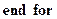
Por�wna� otrzymane wyniki z wynikami
programu z poprzedniego zadania. Doda� do obydwu program�w pomiar czasu
oblicze� i por�wna� r�wnie� z�o�ono�� czasow� program�w.
Odpowied�: �moB02zad12.cs
Zad. 13. Napisa� program, w kt�rym zaimplementowano gradientow� metod� Newtona - Raphsona w celu otrzymania przybli�enia najbardziej optymalnego aproksymanta gaussowskiego dla zadanej funkcji pierwotnej:
W programie nale�y zatem dla ustalonego przedzia�u o ko�cach a = 0, b = p oraz dla rozmiaru aproksymacji N = 201 z krokiem dyskretyzacji:
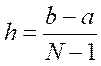
wygenerowa� w�z�y w tym przedziale:
kt�rym przyporz�dkujemy warto�ci funkcji pierwotnej:
W�z�y oraz ich warto�ci wstawimy do aproksymanta S rozpatrywanej funkcji f, kt�ry podobnie jak w SPH przyjmuje posta� sumy N > 0 funkcji bazowych zadanych w kolejnych i-tych w�z�ach j�drem aproksymacji U z no�nikiem�� :
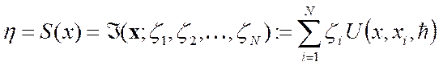
Wyst�puj�ce w tej sumie dowolne liczbowe wsp��czynniki aproksymacji z��i s� na pocz�tku programu nieokre�lone, st�d program powinien je znale��, tak aby wynikowa krzywa g w przyj�tym przedziale:
aproksymowa�a pierwotn� funkcj� f:
W tym celu program powinien wykona� odpowiedni� optymalizacj� o rz�dzie r r�wnym rozmiarowi aproksymacji N. Przyjmujemy zatem r > 0 wolnych parametr�w xk do zoptymalizowania w postaci liczb z zakresu od 0 do 1:
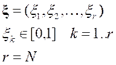
dzi�ki kt�rym wyrazimy wsp��czynniki z��i w sumie aproksymacyjnej S:
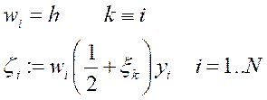
gdzie indeks k parametru jest to�samy z indeksem i w�z�a. Podstawienie tak okre�lonych wsp��czynnik�w do aproksymanta S pozwala zdefiniowa� na potrzeby optymalizacji odpowiednie odwzorowanie, kt�re dane wej�ciowe x zamienia na warto�ci wynikowe h w zale�no�ci od punktu parametr�w x:
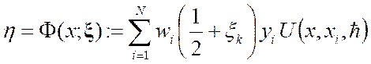
Zawa�my, �e dla parametr�w xk = 1/2 odwzorowanie staje si� aproksymantem SPH. Dok�adne pochodne cz�stkowe z tego odwzorowania wynosz�:
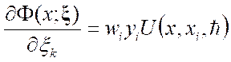
st�d wida�, �e drugie dok�adne pochodne cz�stkowe znikaj�:
Nast�pnie po zdefiniowaniu w optymalizacji przedmiotowego odwzorowania nale�y wygenerowa� zbi�r rozwojowy du�ej liczby (np. 1000) par danych:
�
w kt�rym kolejne pary (x, y) zawieraj� dane wej�ciowe x r�wnomiernie i g�sto pokrywaj�ce przedzia� [a, b] oraz warto�ci docelowe y policzone z funkcji pierwotnej f:
Nast�pnie w programie definiujemy minimalizowan� funkcj� kosztu:
ze strat� w postaci b��du �redniokwadratowego dla problemu regresji:
Zauwa�my, �e pierwsze pochodne cz�stkowe tej funkcji wynosz� dok�adnie:
st�d mo�emy od razu otrzyma� drugie dok�adne pochodne cz�stkowe kosztu:
przy czym w sumie tej docelowa warto�� y ze zbioru danych nie jest u�ywana. Obydwie pochodne wykorzystamy w metodzie Newtona do optymalizacji, a co wi�cej w metodzie Newtona - Raphsona dla funkcji kosztu wzd�u� kierunku h:
wykonujemy dodatkow� jednowymiarow� minimalizacj�:
kt�ra sprowadza si� do warunku koniecznego na minimum:
gdzie zwyk�a pochodna z kosztu po odleg�o�ci a wynosi dok�adnie:
Teraz zastawimy wszystkie najwa�niejsze definicje wyra�e� wyst�puj�cych w algorytmie optymalizacji:
przy czym j�dro aproksymacji zadane jest funkcj� Gaussa 1D:
o no�niku dowolnym, a w szczeg�lno�ci r�wnym:
W kodzie g��wnym programu nale�y zaimplementowa� algorytm Newtona - Raphsona na podstawie pseudokodu:
� # podany zasi�g p�tli
optymalizacji, np. 20
� # podany minimalny
koszt optymalizacji, np. 1e-5
� # losowe pocz�tkowe
parametry optymalizacji
� # p�tla optymalizacji
z krokami schematu iteracji
� # bie��ca warto��
funkcji kosztu
� # warunek osi�gni�cia
minimum kosztu
� # startowy kierunek
poszukiwa�, np. [1.0,...,1.0]
� # sk�adniki macierzy dla
operatora hesjanu
� # sk�adniki ujemnego wektora
dla gradientu
� # uk�ad r�wna�
liniowych do rozwi�zania (wymagane)
� # kierunek poszukiwa�
otrzymany z rozwi�zania uk�adu
� # startowa odleg�o��
poszukiwa�, np. 0.25
� # pomocnicza funkcja
w dodatkowej minimalizacji
� # r�wnanie nieliniowe
do rozwi�zania (opcjonalne)
� # odleg�o��
poszukiwa� otrzymana z rozwi�zania r�wnania
� # przyrosty
parametr�w
� # nowe warto�ci
parametr�w
� # koniec p�tli optymalizacji
Wyst�puj�cy w algorytmie uk�ad r�wna� liniowych na kierunek poszukiwa� mo�na rozwi�za� jedn� ze poznanych metod, np. metod� eliminacji Gaussa. Natomiast r�wnanie nieliniowe na odleg�o�� poszukiwa� mo�e by� rozwi�zane z u�yciem poznanej metody bisekcji o maksymalnej liczbie np. 10 krok�w. Zamiast tej dodatkowej minimalizacji mo�na ustawi� odleg�o�� poszukiwa� na sta�� warto�� np. 0.25, aby wyra�nie spowolni� zbie�no�� optymalizacji. Do zadania do��czono w dodatku dwa pliki z kodem C# dla tych metod, patrz te� �wiczenie nr 3 z zestawu moA06 oraz zadanie nr 1a z zestawu moA07.
Na koniec sporz�dzi� w Excel wykres w badanym przedziale dla funkcji pierwotnej oraz jej aproksymanta. Do wykresu wybra� jedynie kilka (np. 11) przybli�e� aproksymanta otrzymywanych w kolejnych krokach algorytmu optymalizacji. Nanie�� na wykres r�wnie� przebieg aproksymanta SPH otrzymanego wprost z przedmiotowego odwzorowania F dla wszystkich parametr�w xk r�wnych dok�adnie 1/2. Por�wna� wszystkie krzywe na wykresie zwracaj�c uwag� na zachowania brzegowe.
W programie mo�na dodatkowo wykona� analiz� b��d�w i por�wna� b��dy aproksymacji dla aproksymanta otrzymanego z optymalizacji i aproksymanta SPH. W tym celu nale�y obliczy� jedynie maksymalny b��d bezwzgl�dny, jakim obarczona jest otrzymana z aproksymanta krzywa g w odniesieniu do funkcji pierwotnej f:
Ponadto, wykre�li� w Excel otrzymane po zako�czeniu algorytmu wszystkie parametry wolne zoptymalizowane w algorytmie, przy czym na wykres nanie�� dodatkowo prost� poziom� po�o�on� na wysoko�ci 1/2. Sprawdzi�, czy warto�ci parametr�w po�o�one s� w przybli�eniu na tej prostej. W tym celu wyznaczy� b��dy wzgl�dne dla kolejnych parametr�w:
Dodatek: 1 - moB02zad13.cs, 2 - moB02zad13.cs
Odpowied�: �moB02zad13.cs
Wyniki:� 1 - moB02zad13.xls,� 2 - moB02zad13.xls
Wykres kolejnych przybli�e� aproksymanta funkcji do optimum.
Wykres funkcji wraz jej aproksymantem optymalnym i SPH.
Wykres wolnych parametr�w w por�wnaniu do ich warto�ci dla SPH.
Wniosek:
Aproksymacja wyprowadzona teoretycznie w metodzie SPH jest zbli�ona do najbardziej optymalnego aproksymanta otrzymanego numerycznie. Obydwa aproksymanty optymalny i SPH daj� bardzo dobre dopasowanie do pierwotnej funkcji wewn�trz przedzia�u, ale aproksymacja otrzymana z optymalizacji zachowuje si� lepiej na brzegach.
Zad. 14. Napisa� program, kt�ry dla ustalonych przedzia��w o ko�cach a = 0, b = 2p i c = 0, d = 2p szuka metod� Monte Carlo z wy�arzaniem minimum dwuwymiarowej funkcji:
�
W tym celu nale�y zdefiniowa� funkcj� kosztu z ograniczeniem dziedziny:
gdzie obydwa wolne parametry x1,2 nale�� do przedzia�u [0,1].
W kodzie g��wnym programu implementujmy algorytm optymalizacji Monte Carlo z wy�arzaniem na podstawie pseudokodu:
� # podany ma�y
wzgl�dny przyrost temperatury
� # podany ma�y
bezwzgl�dny przyrost parametr�w
� # podany zasi�g p�tli
optymalizacji
� # podany minimalny
poziom temperatury
� # podana pocz�tkowa
temperatura optymalizacji
� # podane lub losowe
pocz�tkowe parametry optymalizacji
� # p�tla optymalizacji
z krokami schematu iteracji
� # warunek osi�gni�cia
minimum kosztu
� # bie��ca warto��
funkcji kosztu
� # losowy numer parametru
z warto�ci� do wylosowania
� # losowe lub te same
warto�ci parametr�w
� # nowa warto�� kosztu
� # bie��cy przyrost
kosztu
� # stare warto�ci
parametr�w
� # nowe warto�ci
parametr�w
� # bezwzgl�dna zbie�no��
do minimum
� # bie��ce
prawdopodobie�stwo przej�cia
� # wzgl�dna zmiana
temperatury dla wy�arzania
� # stochastyczna
zbie�no�� do minimum
� # powr�t do starych warto�ci
parametr�w
� # koniec p�tli optymalizacji
Sprawdzi�, czy punkt o wsp��rz�dnych x i y
dla optymalnych parametr�w x1,2 �znajduje
si� w po�o�eniu minimum funkcji f..
Odpowied�: �moB02zad14.cs